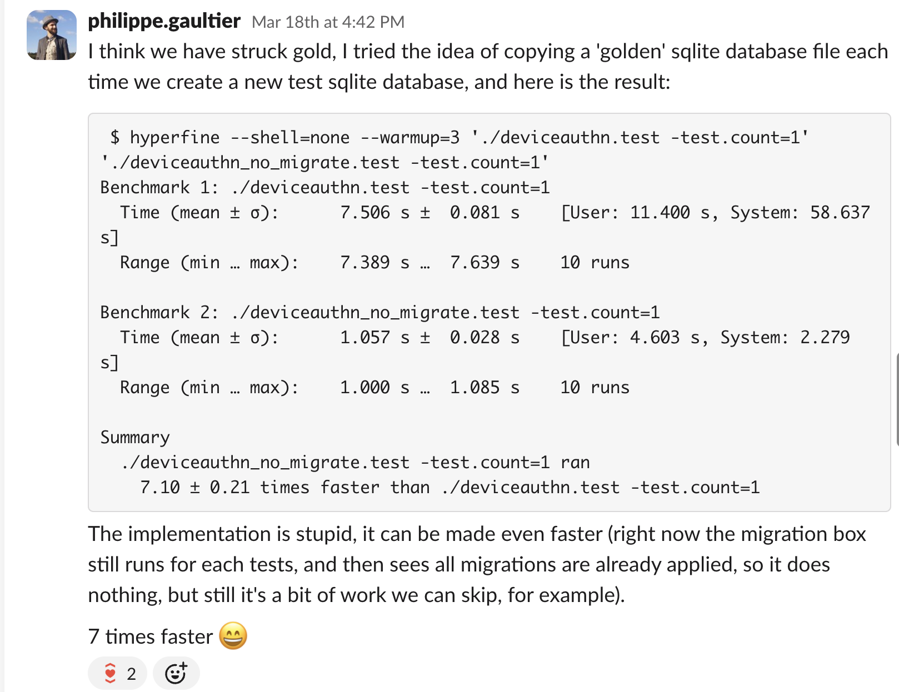

Philippe Gaultier
Philippe Gaultier
Philippe Gaultier
Philippe Gaultier
Published on 2026-06-12. Last modified on 2026-06-12.
We have a giant test suite at work, mostly in Go. The test coverage is great, but it means that it's not that fast to run, and it only will get slower over time as new tests are added. Almost every test needs a pristine database. We are spending a ton of CPU time just applying again and again the same SQL migrations at the start of each test.
As mentioned in a previous article, thousands (!) of SQL migrations have accumulated over the years, and I had to fix a performance issue where we spent a lot of time simply gathering all migration files (not even applying them).
With that fix done, the next bottleneck was applying these migrations. A few reasons make this part very appealing to optimize:
And so I decided to optimize it. When doing performance optimizations, it's important to spend some time first deciding if it's worth your time on paper!
As always: the code is open-source.
Optimization work can be very unrewarding: you spend a lot of time and at the end when you measure, to see no difference (or perhaps worse performance than before!).
So it's also very important, if possible, to do a quick and dirty check at the beginning, to see if the optimization has any legs.
In my case, here's what I wanted to see: let's assume that every test has access to a ready-made database, with an up-to-date database schema. What's the runtime of the test suite then? That's the upper-bound for this work, where I 'optimized' the database migration code to take no time at all.
Thus I did something very simple: I put a breakpoint in one test, right after all database migrations ran. This means the test stopped at a point where a pristine SQLite database was present on disk. I then copied this file with cp to my home directory: this is now my golden (immutable) database. I finally modified the migration code (that all tests start with), to never apply any SQL migrations, and instead just copy (using os.Copy) the golden database file, and use that.
And this is what I saw: a 7x speed-up!

Alright, it's confirmed that this optimization is worth it!
We could do the same as in the prototype above: assume that a human or a tool maintains a golden database file up to date, and when a test starts, it copies this golden file, and uses it as its database.
However, that requires some out-of-band process, since new SQL migrations get added every few days, and there is a risk that this golden file gets out of sync.
So I went the other way: at the start of each test, we either use the golden file if it exists, or we lazily (on demand) create it otherwise, and then start using it.
Due to Go's test framework and the fact that we use a monorepo, running Go tests from many different and unrelated projects, there is no clear entry point for all tests, where we could run our logic1 .
That means that each test must run this logic at the start of the test, and we'll have a contention point when checking if the golden database file already exists, which we accept.
The approach is, if I dare say so, quite elegant:
If the golden database file does not exist, we need to apply all SQL migrations to a new database (file):
/tmp/123456/tmp/<SHA256 hash>. We now have our golden database! This is using content addressing: a test can simply try to find the file using the SHA256 hash and be assured that the file has had all SQL migrations applied. The name is a hash of the content.A few points are critical to make it correct:
/tmp/<SHA256 hash>) directly: they are applied to a temporary file (in step 3.3 and 3.4), which is then renamed to be the golden database file (in step 3.5). This is crucial to avoid concurrent tests seeing a partially-written golden database file, where the file exists but not all SQL migrations have been applied yet. The golden database file either exists in its full-fledged form, or it doesn't, but it never exists in a partial form.SQLite boasts about having only one database file, which is trivially shared with others, copied, etc. It was true for a long time, but nowadays, there is a journal file (.db-journal), a WAL file (when using WAL mode: .db-wal), shared memory files when multiple processes are accessing the same database (which is the case when running go tests for multiple packages: .db-shm), etc.
That means that simply using cp might work in some, but not in all cases, and lead to corrupted databases or flaky tests. SQLite comes out of the box with a solution: the backup API, which we use here, and it takes care of all these ancillary files, it works also in in-memory mode, etc.
Some tests do want to apply all SQL migrations one-by-one, for example the tests for the migration code itself, so there is an opt-out flag to not use any golden database file.
The code that applies all SQL migrations is a library that is both used by tests, and by the migration CLI tool. This CLI tool is used in production environments to apply the latest SQL migrations by operators. In this scenario, we never want to use a golden database file. To avoid any issues, the use of the golden database file is only done in tests using this check: if testing.Testing() { ... }.
We support 4 different databases in all applications (SQLite, MySQL, PostgreSQL, CockroachDB) but unfortunately each database has its own quirky way to 'clone' a database schema. For this work, I only targeted SQLite, but this is doable for every database.
Since many tests run in parallel possibly in different processes, and we do not have any synchronization mechanism (like a lock file) for simplicity, there is a chance that multiple tests concurrently create the golden database file. This is fine: it is a bit of extra work, but correctness is guaranteed by the use of os.Rename (rename(2) under the hood) as the final step, which is atomic. And also: the file would be replaced by exactly the same content, so this not an issue.
A seemingly simpler approach is to squash all SQL migrations into one file called current_schema.sql and apply that, meaning there is only one migration, the current schema. However that also requires maintaining this file by hand each time a new SQL migration is added, and in our case there is not one current schema but many: we have a surprisingly large matrix of 'current schemas': 4 databases engines (SQLite, MySQL, PostgreSQL, CockroachDB, each with their own specific migrations) x 6 applications x 2 variants (OSS and enterprise), at least.
The golden database file is essentially the current schema, using content addressing, in an already optimized binary form instead of SQL, automatically managed by the code instead of by hand.
The final speed-up when running all tests using SQLite is 2.2x. It's not quite the 7x from the prototype but that was expected: the real implementation always does more work (SHA256 computations, etc) and cannot take shortcuts.
I think it's overall pretty good, given that there is no cost (we simply do less work) and the diff is relatively short. It took quite a bit of experimentation and research, and there are still a few things we could optimize, but I'm happy with the approach, it has been rock solid for a few months already, and I will definitely use it in future projects.
And finally: this work is open-source and also benefits the community hacking on the code. Which is a nice feeling.
We could add TestMain everywhere but that would be a lot of work and still, when dealing with multiple Go packages using go test ./..., each package executes its tests concurrently, in a separate process, there is no clear way (that I know of) to tell Go: run this setup code before all tests in the monorepo.↩
Using cp here is not quite enough, a better way is to use the backup API, see Edge cases and dead-ends to understand why.↩
If you enjoy what you're reading, you want to support me, and can afford it: Support me. That allows me to write more cool articles!
This blog is open-source! If you find a problem, please open a Github issue. The content of this blog as well as the code snippets are under the BSD-3 License which I also usually use for all my personal projects. It's basically free for every use but you have to mention me as the original author.
My views are my own and not those of my employer.